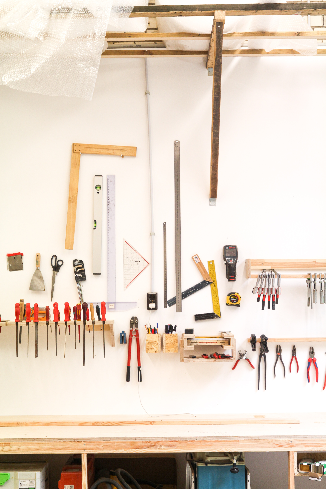

Odin's Landing Page
Welcome to my version of the landing page project from The Odin Project. Feel free to look around.

Toolbox

HTML

CSS
JavaScript

Photo Credit: Beazy on Unsplash
React
"I choose to run towards my problems, and not away from them. Because that’s– because that’s what heroes do."
- Thor Odinson
Do the thing!
You can use the links to find me, or you can just continue your day and miss out on my awesomeness!